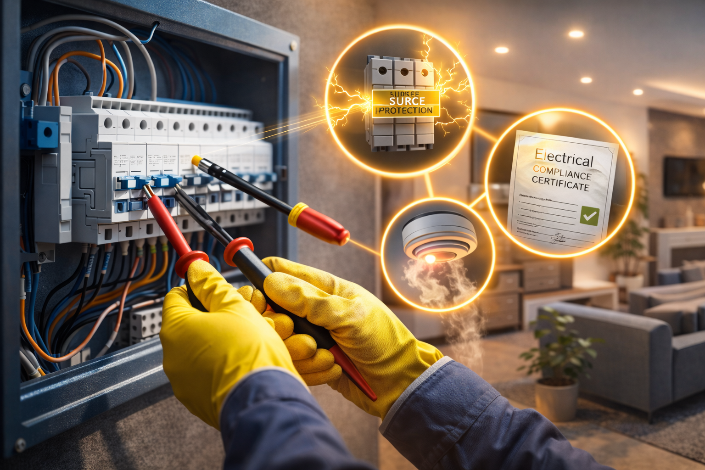

Professional electrical solutions for residential and commercial properties across Durban and KwaZulu-Natal.

SBJ Electrical Projects provides licensed electrical services in Durban and across KwaZulu-Natal, delivering safe, compliant and high-quality installations for residential and commercial properties.
Our services include general electrical installations, fault finding, distribution board upgrades, Electrical Compliance Certificates (COC), surge protection devices and lighting installations. As trusted electrical contractors in Durban and KZN, we ensure all work meets regulatory and safety standards.
Request Quote